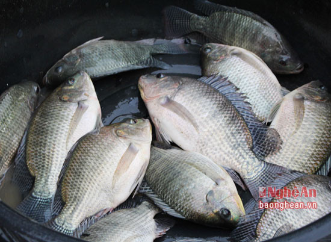
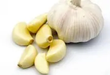
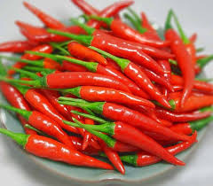
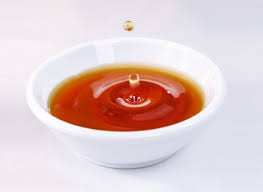
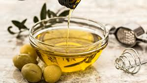

Nguyên Liệu

Cá rô phi
1 con (khoảng 500g)

Tỏi
5 tép

Ớt
2 trái

Nước mắm
3 muỗng canh

Đường
2 muỗng canh

Dầu ăn
Để chiên cá
Cách Chế Biến
- Rửa sạch cá rô phi, để ráo nước rồi chiên vàng giòn cả hai mặt.
- Băm nhỏ tỏi và ớt.
- Pha nước mắm với đường, tỏi và ớt.
- Sau khi cá đã chiên vàng, đổ hỗn hợp nước mắm vào chảo, đảo đều cho cá thấm đều gia vị.
- Nấu cho đến khi nước mắm sệt lại và bám đều lên cá.
- Cho cá ra đĩa và thưởng thức với cơm nóng.